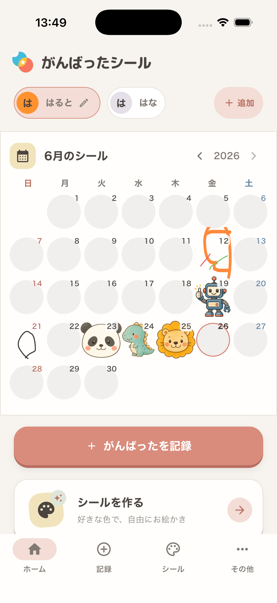
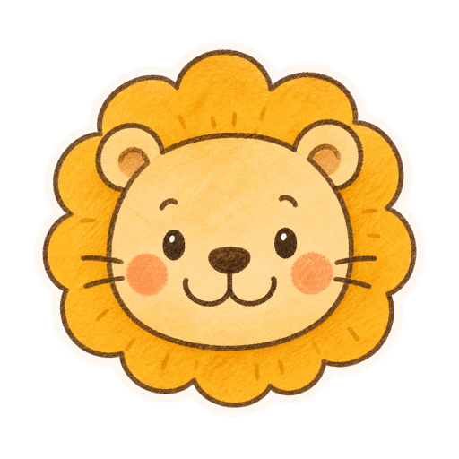
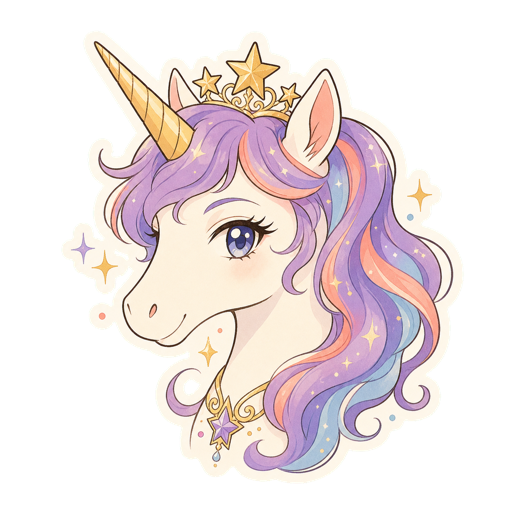
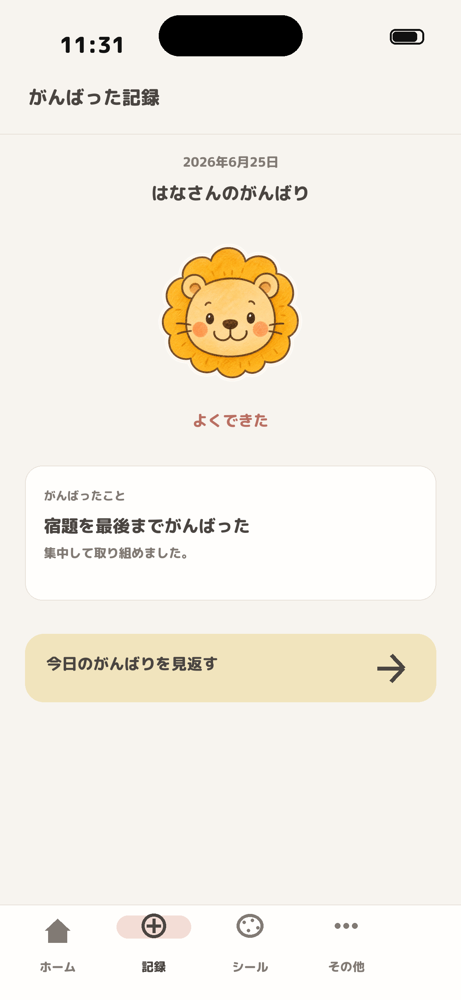
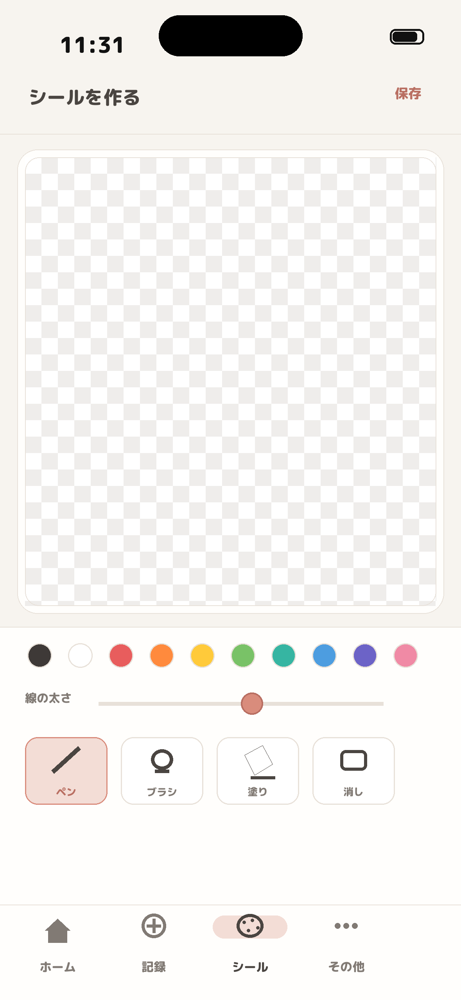
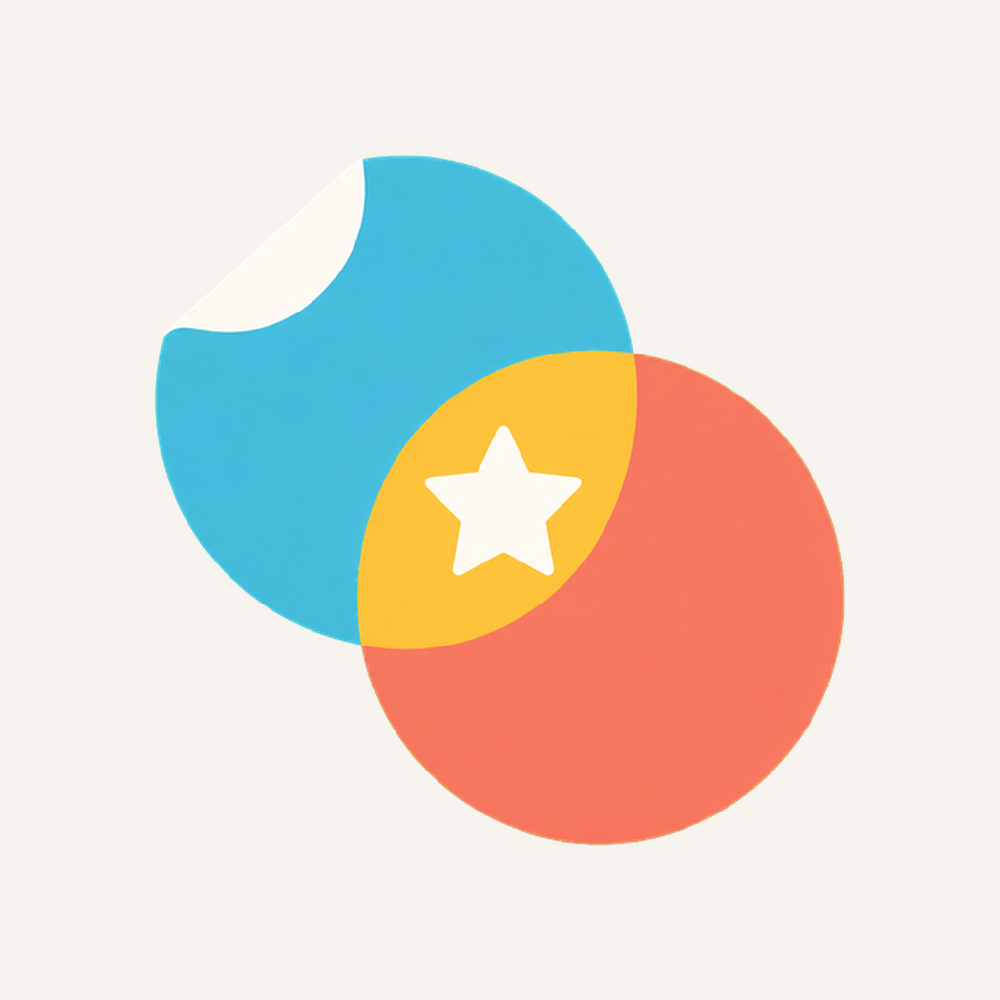

シールカレンダー
月ごとにシールが並ぶから、がんばりがひと目でわかります。
親子で続ける、やさしい成長記録
子どもの「できた！」を、毎日のシールカレンダーに。 日付・内容・シールを選ぶだけで、ほめるきっかけが自然に残ります。 自分で描いたシールも使える、親子で楽しい記録アプリです。



Features
習慣管理っぽくなりすぎず、親子の「今日もできたね」を自然に増やすための機能をそろえました。
月ごとにシールが並ぶから、がんばりがひと目でわかります。
日付、がんばった内容、シールを選ぶだけ。自由記述もできます。
好きな色とブラシで、家庭だけのオリジナルシールを作れます。
Screenshots
ホームはカレンダー中心。記録とシール作成へすぐ進める、シンプルな導線です。
子どもごとのシールカレンダーを大きく表示。毎日の成果をすぐ見返せます。

その日のシールとがんばった内容を、大きく見やすく表示します。

好きな色とツールで、家庭だけのオリジナルシールを作れます。
For families
記録は完璧じゃなくて大丈夫。 1枚のシールが、子どもの自信と親子の会話を少しずつ積み上げます。
“シールが増えると、がんばったことを親子で自然に話せる。”
がんばったシールが目指す体験
Download
App Store公開後、このページからダウンロードできます。